Logic gates are the building blocks of digital electronics. The fundamental logic gates include the INVERT (NOT), AND, NAND, OR, NOR, exclusive OR (XOR), and exclusive NOR (XNOR) gates. Each of these gates performs a different logical operation. Figure 12.10 provides a description of what each logic gate does and gives a switch and transistor analogy for each gate.
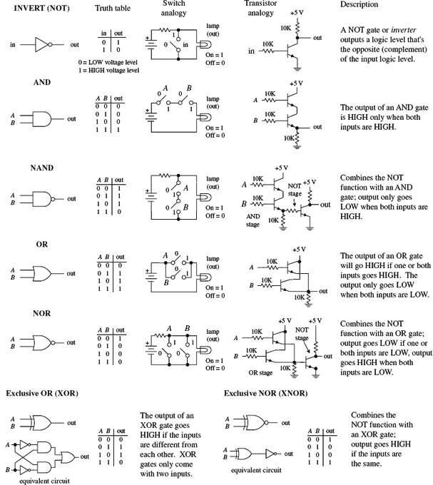
FIGURE 12.10
12.2.1 Multiple-Input Logic Gates
AND, NAND, OR, and NOR gates often come with more than two inputs (this is not the case with XOR and XNOR gates, which require two inputs only). Figure 12.11 shows a four-input AND, an eight-input AND, a three-input OR, and an eight-input OR gate. With the eight-input AND gate, all inputs must be high for the output to be high. With the eight-input OR gate, at least one of the inputs must be high for the output to go high.
FIGURE 12.11
12.2.2 Digital Logic Gate ICs
The construction of digital gates is best left to the IC manufacturers. In fact, making gates from discrete components is highly impractical in regard to both overall performance (power consumption, speed, drive capacity, and so on) and overall cost and size.
As we mentioned in the introduction to this chapter, the use of individual logic ICs has almost completely been superseded by the use of microcontrollers. However, one or two logic ICs are still often used together in simple applications.
There are a number of technologies used in the fabrication of digital logic. The two most popular technologies include transistor-transistor logic (TTL) and complementary MOSFET (CMOS) logic. TTL incorporates bipolar transistors into its design, while CMOS incorporates MOSFET transistors. Both technologies perform the same basic functions, but certain characteristics (such as power consumption, speed, and output drive capacity) differ. There are many subfamilies within both TTL and CMOS. These subfamilies, as well as the various characteristics associated with each subfamily, will be discussed in greater detail in Section 12.4.
A logic IC, be it TTL or CMOS, typically houses more than one logic gate (for example, a quad two-input NAND, hex inverter, and so on). Each of the gates within the IC shares a common supply voltage that is implemented via two supply pins: a positive supply pin (+VCC or +VDD) and a ground pin (GND). The vast majority of TTL and CMOS ICs are designed to run off a +5-V supply. (This does not apply for all the logic families, but I will get to that in Section 12.4.)
Generally speaking, input and output voltage levels are assumed to be 0 V (low) and +5 V (high). However, the actual input voltage required and the actual output voltage provided by the gate are not set in stone. For example, the 74xx TTL series will recognize a high input from 2.0 to 5 V and a low from 0 to 0.8 V, and will guarantee a high output from 2.4 to 5 V and a low output from 0 to 0.4 V. However, for the CMOS 4000B series (VCC = +5 V), recognizable input voltages range from 3.3 to 5 V for high and 0 to 1.7 V for low. Guaranteed high and low output levels range from 4.9 to 5 V and 0 to 0.1 V, respectively. Again, I will discuss specifics later in Section 12.4. For now, let’s just get acquainted with what some of these ICs look like, as shown in Figs. 12.12 and 12.13. The CMOS devices listed in the figures include 74HCxx and 4000(B). The TTL devices shown include the 74xx, 74Fxx, and 74LS.
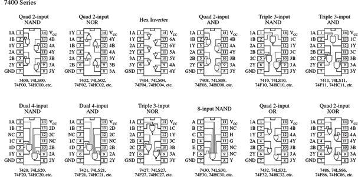
FIGURE 12.12
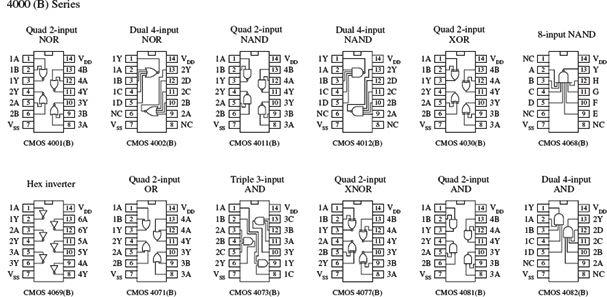
FIGURE 12.13
12.2.3 Applications for a Single Logic Gate
Before we jump into the heart of logic gate applications that involve combining logic gates to form complex decision-making circuits, let’s take a look at a few simple applications that require the use of a single logic gate.
An enable/disable gate is a logic gate that acts to control the passage of a given waveform. The waveform—say, a clock signal—is applied to one of the gate’s inputs, while the other input acts as the enable/disable control lead. Enable/disable gates are used frequently in digital systems to enable and disable control information from reaching various devices. Figure 12.14 shows two enable/disable circuits: the first uses an AND gate, and the second uses an OR gate. NAND and NOR gates are also frequently used as enable gates.
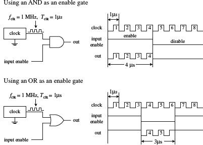
In the upper part of the figure, an AND gate acts as the enable gate. When the input enable lead is made high, the clock signal will pass to the output. In this example, the input enable is held high for 4 μs, allowing 4 clock pulses (where Tclk = 1 μs) to pass. When the input enable lead is low, the gate is disabled, and no clock pulses make it through to the output.
Below, an OR gate is used as the enable gate. The output is held high when the input enable lead is high, even as the clock signal is varying. However, when the enable input is low, the clock pulses are passed to the output.
FIGURE 12.14
Waveform Generation
By using the basic enable/disable function of a logic gate, as illustrated in the previous example, it is possible, with the help of a repetitive waveform generator circuit, to create specialized waveforms that can be used for the digital control of sequencing circuits.
An example waveform generator circuit is the Johnson counter. The Johnson counter will be discussed in Section 12.8. For now, let’s simply focus on the outputs. In Fig. 12.15, a Johnson counter uses clock pulses to generate different output waveforms, as shown in the timing diagram. Outputs A, B, C, and D go high for 4 μs (four clock periods) and are offset from each other by 1 μs. Outputs 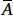, 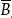, 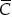, and 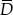 produce waveforms that are complements of outputs A, B, C, and D, respectively.
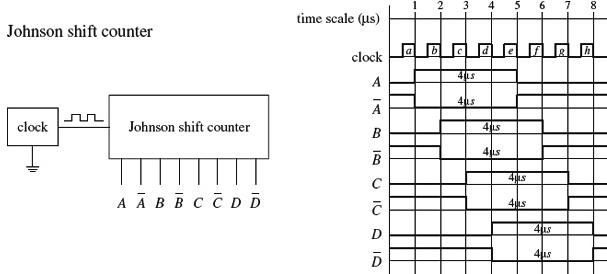
FIGURE 12.15
Now, there may be certain applications that require 4-μs high/low pulses applied at a given time, as the counter provides. However, what would you do if the application requires a 3-μs high waveform that begins at 2 μs and ends at 5 μs (relative to the time scale indicated in Fig. 12.15)? This is where the logic gates come in handy. For example, if you attach an AND gate’s inputs to the counter’s A and B outputs, you will get the desired 2- to 5-μs high waveform at the AND gate’s output: from 1 to 2 μs the AND gate outputs a low (A = 1, B = 0), from 2 to 5 μs the AND gate outputs a high (A = 1, B = 1), and from 5 to 6 μs the AND gate outputs a low (A = 0, B = 1). See the leftmost area of Fig. 12.16.
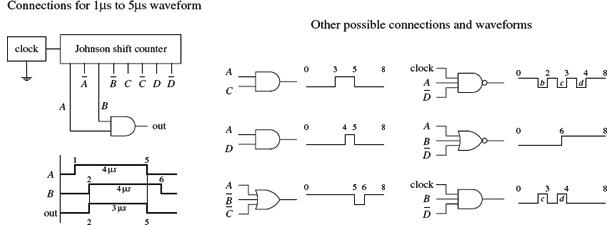
FIGURE 12.16
Various other specialized waveforms can be generated by using different logic gates and tapping different outputs of the Johnson shift counter. In Fig. 12.16, six other possibilities are shown.
12.2.4 Combinational Logic
Combinational logic involves combining logic gates together to form circuits capable of enacting more useful, complex functions. For example, let’s design the logic used to instruct a janitor-type robot to recharge itself (seek out a power outlet) only when a specific set of conditions is met. The “recharge itself” condition is specified as follows:
• When its battery is low (indicated by a high output signal from a battery-monitor circuit)
• When the workday is over (indicated by a high output signal from a timer circuit)
• When vacuuming is complete (indicated by a high voltage output from a vacuum-completion monitor circuit)
• When waxing is complete (indicated by a high output signal from a wax-completion monitor circuit).
Let’s also assume that the power-outlet-seeking routine circuit is activated when a high is applied to its input.
Two simple combinational circuits that perform the desired logic function for the robot are shown in Fig. 12.17. The two circuits use a different number of gates but perform the same function. Now, the question remains, how did we come up with these circuits? In either circuit, it is not hard to predict which gates are needed. You simply exchange the word and present within the conditional statement with an AND gate within the logic circuit, and exchange the word or present within the conditional statement with an OR gate within the logic circuit. Common sense takes care of the rest.
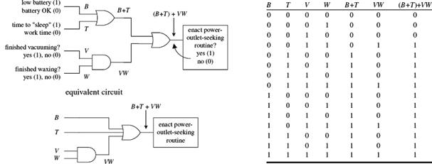
FIGURE 12.17
However, when you begin designing more complex circuits, using intuition to figure out what kind of logic gates to use and how to join them together becomes exceedingly difficult. To make designing combinational circuits easier, a special symbolic language called Boolean algebra is used, which uses only true and false variables. A Boolean expression for the robot circuit would appear as follows:
E = (B + T) + VW
This expression amounts to saying that if B (battery-check circuit’s output) or T (timer circuit’s output) is true, or V and W (vacuum and waxing circuit outputs) are true, then E (enact power-outlet circuit input) is true.
Note that the word or is replaced by the symbol +, and the word and is simply expressed in a way similar to multiplying two variables together (placing them side by side or using a dot between variables). Also note that the term true in Boolean algebra is expressed as a 1, and false is expressed as a 0. Here, we are assuming positive logic, where true equals high voltage. Using the Boolean expression for the robot circuit, we can come up with some of the following results (the truth table in Fig. 12.17 provides all possible results):
E = (B + T) + VW |
|
E = (1 + 1) + (1 · 1) = 1 + 1 = 1 |
(battery is low, time to sleep, finished with chores = go recharge) |
E = (1 + 0) + (0 · 0) = 1 + 0 = 1 |
(battery is low = go recharge) |
E = (0 + 0) + (1 · 0) = 0 + 0 = 0 |
(hasn’t finished waxing = don’t recharge yet) |
E = (0 + 0) + (1 · 1) = 0 + 1 = 1 |
(has finished all chores = go recharge) |
E = (0 + 0) + (0 · 0) = 0 + 0 = 0 |
(hasn’t finished vacuuming and waxing = don’t recharge yet) |
The robot example showed you how to express AND and OR functions in Boolean algebraic terms. But what about the negation operations (NOT, NAND, and NOR) and the exclusive operations (XOR and XNOR)? How do you express these in Boolean terms?
• For a NOT condition, place a line over the NOT’ed variable or variables.
• For a NAND expression, place a line over an AND expression.
• For a NOR expression, place a line over an OR expression.
• For exclusive operations, use the symbol ⊕.
Figure 12.18 shows a rundown of all the possible Boolean expressions for the various logic gates.
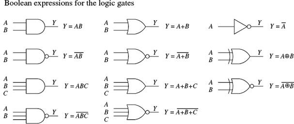
FIGURE 12.18
Like conventional algebra, Boolean algebra has a set of logic identities that can be used to simplify the Boolean expressions and thus make circuits more compact. These identities go by names such as the commutative law of addition, associate law of addition, and distributive law. Instead of worrying about what the various identities are called, simply make reference to the list of identities provided on the next page. Most of these identities are self-explanatory, although a few are not so obvious, as you will see in a minute. The various circuits in Fig. 12.19 show some of the identities in action.
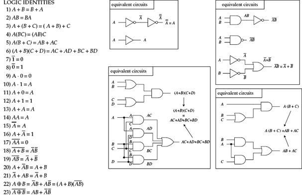
FIGURE 12.19
Let’s find the initial Boolean expression for the circuit in Fig. 12.20, and then use the logic identities to come up with a circuit that requires fewer gates.
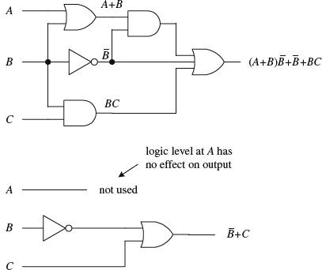
The circuit shown here is expressed by the following Boolean expression:
out = (A + B)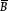 + + BC
This expression can be simplified by using Identity 5:
(A + B) = A + B
This makes:
out = A + B + = BC
Using Identities 17 (B = 0) and ( + 0 = ), you get:
out = A + 0 + + BC = A + BC +
Factoring a from the preceding term gives:
out = (A + 1) + BC
Using Identity 10, you get:
out = (1) + BC = + BC
Finally, using Identity 21, you get the simplified expression:
out = + C
Notice that A is now missing. This means that the logic input at A has no effect on the output and therefore can be omitted. From the reduction, you get the simplified circuit in the bottom part of the figure.
FIGURE 12.20
Dealing with Exclusive Gates (Identities 22 and 23)
Now let’s take a look at a couple of not-so-obvious logic identities: those that involve the XOR (Identity 22) and XNOR (Identity 23) gates. The leftmost section in Fig. 12.21 shows equivalent circuits for the XOR gate. In the lower two equivalent circuits, Identity 22 is proved by Boolean reduction. Equivalent circuits for the XNOR gate are shown in the rightmost section of the figure. To prove Identity 23, you can simply invert Identity 22.
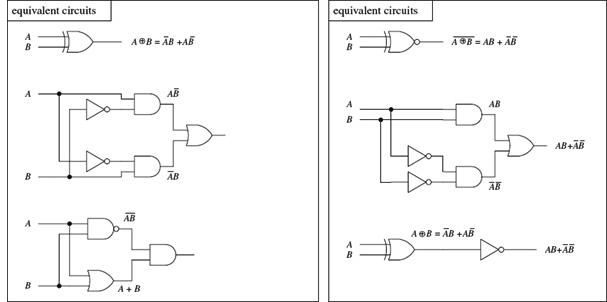
FIGURE 12.21
De Morgan’s Theorem (Identities 18 and 19)
To simplify circuits containing NANDs and NORs, you can use an incredibly useful theorem known as De Morgan’s theorem. This theorem allows you to convert an expression having an inversion bar over two or more variables into an expression having inversion bars over single variables only. De Morgan’s theorem (Identities 18 and 19) is as follows:
The easiest way to prove that these identities are correct is to use Fig. 12.22, noting that the truth tables for the equivalent circuits are the same. Note the inversion bubbles present on the inputs of the corresponding leftmost gates. The inversion bubbles mean that before inputs A and B are applied to the base gate, they are inverted (negated). In other words, the bubbles are simplified expressions for NOT gates.
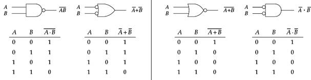
FIGURE 12.22
Why do you use the inverted-input OR gate symbol instead of a NAND gate symbol? Or why would you use the inverted-input AND gate symbol instead of a NOR gate symbol? This is left up to the designer to choose whatever symbol seems most logical to use. For example, when designing a circuit, it may be easier to think about ORing or ANDing inverted inputs than to think about NANDing or NORing inputs. Similarly, it may be easier to create truth tables or work with Boolean expressions using the inverted-input gate. It is typically easier to create truth tables and Boolean expressions that do not have variables joined under a common inversion bar. Of course, when it comes time to construct the actual working circuit, you probably will want to convert to the NAND and NOR gates because they do not require additional NOT gates at their inputs.
Bubble Pushing
A shortcut method for forming equivalent logic circuits, based on De Morgan’s theorem, is to use what’s called bubble pushing.
Bubble pushing involves the following tricks:
• Change an AND gate to an OR gate or change an OR gate to an AND gate.
• Add inversion bubbles to the inputs and outputs where there were none, while removing the original bubbles.
That’s it. You can prove to yourself that this works by examining the corresponding truth tables for the original gate and the bubble-pushed gate, or you can work out the Boolean expressions using De Morgan’s theorem. Figure 12.23 shows examples of bubble pushing.
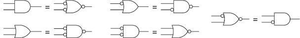
FIGURE 12.23
Universal Capability of NAND and NOR Gates
NAND and NOR gates are referred to as universal gates because each alone can be combined together with itself to form all other possible logic gates. The ability to create any logic gate from NAND or NOR gates is obviously a handy feature. For example, if you do not have an XOR IC handy, you can use a single multigate NAND gate (such as 74HC00) instead. Figure 12.24 shows how to wire NAND or NOR gates together to create equivalent circuits of the various logic gates.
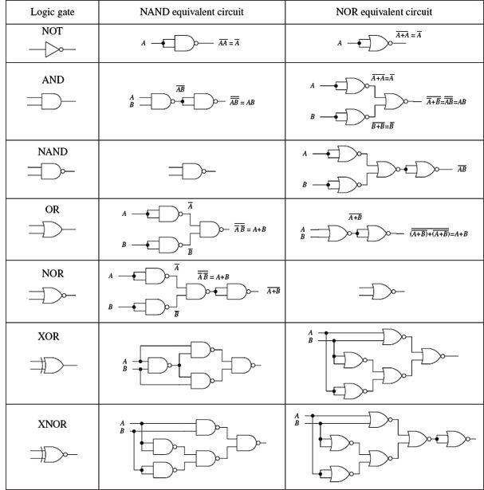
FIGURE 12.24
AND-OR-INVERTER Gates
When a Boolean expression is reduced, the equation that is left over typically will be of one of the following two forms: product of sums (POS) or sum of products (SOP). A POS expression appears as two or more OR'ed variables AND'ed together with two or more additional OR'ed variables. An SOP expression appears as two or more AND'ed variables OR'ed together with additional AND'ed variables. Figure 12.25 shows two circuits that provide the same logic function (they are equivalent), but the circuit to the left is designed to yield a POS expression, while the circuit to the right is designed to yield a SOP expression.
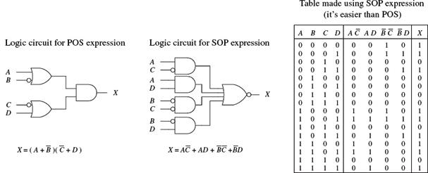
FIGURE 12.25
Which circuit is best for design: the one that implements the POS expression or the one that implements the SOP expression? The POS design shown here would appear to be the better choice because it requires fewer gates. However, the SOP design is nice because it is easy to work with the Boolean expression. For example, which Boolean expression in Fig. 12.25 (POS or SOP) would you rather use to create a truth table? The SOP expression seems the obvious choice.
A more down-to-earth reason for using an SOP design has to do with the fact that special ICs called AND-OR-INVERTER (AOI) gates are designed to handle SOP expressions. For example, the 74LS54 AOI IC shown in Fig. 12.26 creates an inverted SOP expression at its output, via two two-input AND gates and two three-input AND gates NOR'ed together. A NOT gate can be attached to the output to get rid of the inversion bar, if desired. If specific inputs are not used, they should be held high, as shown in the example circuit in Fig. 12.26. AOI ICs come in many different configurations—check out the catalogs to see what’s available.
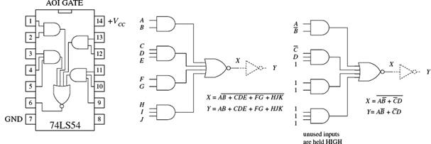
FIGURE 12.26
12.2.5 Keeping Circuits Simple (Karnaugh Maps)
We have just covered how using the logic identities can simplify a Boolean expression. This is important because it reduces the number of gates needed to construct the logic circuit. However, as I am sure you will agree, having to work out Boolean problems in longhand is not easy. It takes time and ingenuity. A simple way to avoid the unpleasant task of using your ingenuity is to get a computer program that accepts a truth table or Boolean expression, and then provides you with the simplest expression, and perhaps even the circuit schematic.
However, let’s assume that you do not have such a program to help you out. Are you stuck with the Boolean longhand approach? No. You can use a technique referred to as Karnaugh mapping. With this technique, you take a given truth table (or Boolean expression that can be converted into a truth table), convert it into a Karnaugh map, apply some simple graphic rules, and come up with the simplest (most of the time) possible Boolean expression for your final circuit. Karnaugh mapping works best for circuits with three to four inputs—below this, things usually do not require much thought anyway; beyond four inputs, things get quite tricky.
Here’s a basic outline showing how to apply Karnaugh mapping to a three-input system:
1. Select a desired truth table. Let’s choose the one shown in Fig. 12.27. (If you have only a Boolean expression, transform it into an SOP expression and use the SOP expression to create the truth table; refer to Fig. 12.26 to figure out how this is done.)
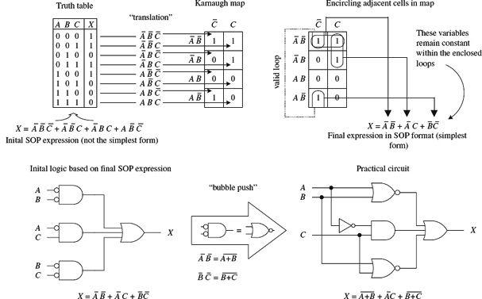
FIGURE 12.27
2. Translate the truth table into a Karnaugh map. A Karnaugh map is similar to a truth table but has its variables represented along two axes. Translating the truth table into a Karnaugh map reduces the number of 1s and 0s needed to present the information. Figure 12.27 shows how the translation is carried out.
3. After you create the Karnaugh map, proceed to encircle adjacent cells of 1s into groups of 2, 4, or 8. The more groups you can encircle, the simpler the final equation will be. In other words, take all possible loops.
4. Identify the variables that remain constant within each loop, and write out an SOP equation by OR'ing these variables together. Here, constant means that a variable and its inverse are not present together within the loop. For example, the top horizontal loop in Fig. 12.27 yields (the first term in the SOP expression), since ’s and ’s inverses (A and B) are not present. However, the C variable is omitted from this term because C and are both present.
5. The SOP expression you end up with is the simplest possible expression. With it, you can create your logic circuit. You may need to apply some bubble pushing to make the final circuit practical, as shown in Fig. 12.28.
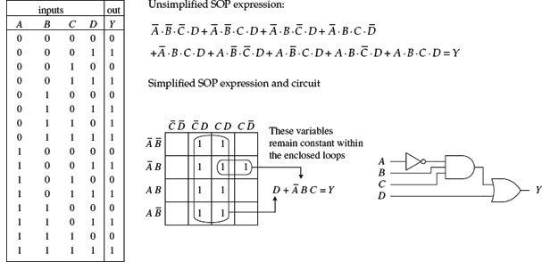
FIGURE 12.28
To apply Karnaugh mapping to four-input circuits, you apply the same basic steps used in the three-input scheme. However, now you must use a 4 × 4 Karnaugh map to hold all the necessary information. Figure 12.28 shows an example of how a four-input truth table (or unsimplified four-variable SOP expression) can be mapped and converted into a simplified SOP expression that can be used to create the final logic circuit.
Figure 12.29 shows an example that uses an AOI IC to implement the final SOP expression after mapping. I’ve thrown in variables other than the traditional A, B, C, and D just to let you know you are not limited to them alone. The choice of variables is up to you and usually depends on the application.
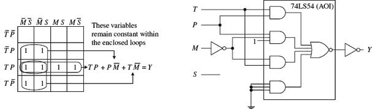
FIGURE 12.29
Other Looping Configurations
Figure 12.30 shows examples of other looping arrangements used with 4 × 4 Karnaugh maps.
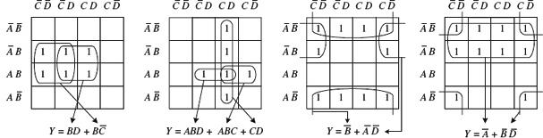
FIGURE 12.30
There are also useful online resources for exploring truth tables and minimizing logical expressions, such as these:
12.3 Combinational Devices
Now that you know a little something about how to use logic gates to enact functions represented within truth tables and Boolean expressions, it is time to take a look at some common functions that are used in the real world of digital electronics. As you will see, these functions are usually carried out by an IC that contains all the necessary logic.
As with almost everything discussed in this chapter, before using these ideas, you need to ask yourself if using a microcontroller would be more appropriate. However, many of the devices described here can be used with a microcontroller, especially when it comes to decoders. They can be a useful and low-cost solution for tasks such as driving more LEDs than there are pins on the microcontroller that you are using.
A word on IC part numbers before we begin. As with the logic gate ICs, the combinational ICs that follow will be of either the 4000 or 7400 series. It is important to note that an original TTL IC, like the 74138, is essentially the same device (usually with the same pinouts and function, but not always) as its newer counterparts, such as the 74F138, 74HC128 (CMOS), and 74LS138. The practical difference resides in the overall performance of the device (speed, power dissipation, voltage level rating, and so on). I will get into these gory details in a bit.
FIGURE 12.31
12.3.1 Multiplexers (Data Selectors) and Bilateral Switches
Multiplexers or data selectors act as digitally controlled switches. The term data selector appears to be the accepted term when the device is designed to act like an SPDT switch, while the term multiplexer is used when the throw count of the switch exceeds two, such as an SP8T. I will stick with this convention (although others may not).
A simple 1-of-2 data selector built from logic gates is shown in Fig. 12.32. The data select input of this circuit acts to control which input (A or B) gets passed to the output: When data select is low, input A passes while B is blocked. When data select is high, input B is passed while A is blocked. To understand how this circuit works, think of the AND gates as enable gates.
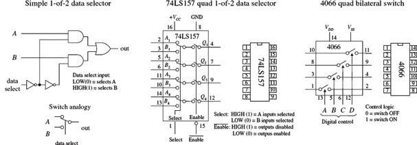
FIGURE 12.32
There are a number of different types of data selectors that come in IC form. For example, the 74LS157 quad 1-of-2 data selector IC, shown in Fig. 12.32, acts like an electrically controlled quad SPDT switch (or if you like, a 4PDT switch). When its select input is set high (1), inputs A1, A2, A3, and A4 are allowed to pass to outputs Q1, Q2, Q3, and Q4. When its select input is low (0), inputs B1, B2, B3, and B4 are allowed to pass to outputs Q1, Q2, Q3, and Q4. Either of these two conditions, however, ultimately depends on the state of the enable input.
When the enable input is low, all data-input signals are allowed to pass to the output; however, if the enable is high, the signals are not allowed to pass. This type of enable control is referred to as active-low enable, since the active function (passing the data to the output) occurs only with a low-level input voltage. The active-low input is denoted with a bubble (inversion bubble), and the outer label of the active-low input is represented with a line over it. Sometimes people omit the bubble and place a bar over the inner label. Both conventions are used commonly.
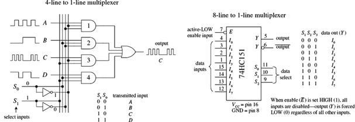
FIGURE 12.33
Figure 12.33 shows a 4-line-to-1-line multiplexer built with logic gates. This circuit resembles the 2-of-1 data selector shown in Fig. 12.32 but requires an additional select input to provide four address combinations.
In terms of ICs, there are multiplexers of various input line capacities. For example, the 74151 8-line-to-1-line multiplexer uses three select inputs (S0, S1, S2) to choose among one of eight possible data inputs (I0 to I7) to be funneled to the output. Note that this device actually has two outputs: one true (pin 5) and one inverted (pin 6). The active-low enable forces the true output low when set high, regardless of the inputs.
To create a larger multiplexer, you combine two smaller multiplexers together. For example, Fig. 12.34 shows two 8-line-to-1-line 74HC151s combined to create a 16-line-to-1-line multiplexer. Another alternative is to use a 16-line-to-1-line multiplexer IC like the 74HC150 shown in the figure. Check the catalogs to see what other kinds of multiplexers are available.
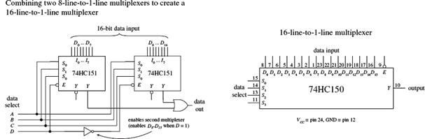
FIGURE 12.34
Finally, let’s take a look at a very useful device called a bilateral switch. An example bilateral switch IC is the 4066, shown to the far right in Fig. 12.32. Unlike the multiplexer, this device merely acts as a digitally controlled quad SPST switch or quad transmission gate. Using a digital control input, you select which switches are on and which switches are off. To turn on a given switch, apply a high level to the corresponding switch select input; otherwise, keep the select input low.
In Section 12.10, we will look at analog switches and multiplexers. These devices use digital select inputs to control analog signals. Analog switches and multiplexers become important when you start linking the digital world to the analog world.
12.3.2 Demultiplexers (Data Distributors) and Decoders
A demultiplexer (or data distributor) is the opposite of a multiplexer. It takes a single data input and routes it to one of several possible outputs. A simple four-line demultiplexer built from logic gates is shown on the left side of Fig. 12.35. To select the output (A, B, C, or D) to which you want to send the input signal (applied at E), you apply logic levels to the data select inputs (S0, S1), as shown in the truth table.
FIGURE 12.35
Notice that the unselected outputs assume a high level, while the selected output varies with the input signal. An IC that contains two functionally separate four-line demultiplexers is the 74HC139, shown on the right side of Fig. 12.35. If you need more outputs, check out the 75xx154 16-line demultiplexer. This IC uses four data select inputs to choose from 1 of 16 possible outputs. Check out the catalogs to see what other demultiplexers exist.
A decoder is somewhat like a demultiplexer, but it does not route input data to a specific output via data select inputs. Instead, it simply uses the data select inputs to choose which output (or outputs) among many are to be made high or low. The number of address inputs, the number of outputs, and the active state of the selected output vary from decoder to decoder. The variance is based on what the decoder is designed to do. For example, the 74LS138 1-of-8 decoder shown in Fig. 12.36 uses a 3-bit address input to select which of eight outputs will be made low; all other outputs are held high. Like the demultiplexer in Fig. 12.35, this decoder has active-low outputs.
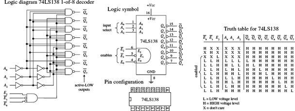
FIGURE 12.36
Now what exactly does it mean to say an output is an active-low output? It simply means that when an active-low output is selected, it is forced to a low logic state; otherwise, it is held high. Active-high outputs behave in the opposite manner. An active-low output is usually indicated with a bubble, although sometimes it is indicated with a barred variable within the IC logic symbol—no bubble included. Active-high outputs have no bubbles. Both active-low and active-high outputs are equally common among ICs.
By placing a load (for example, a warning LED) between +VCC and an active-low output, you can sink current through the load and into the active-low output when the output is selected. By placing a load between an active-high output and ground, you can source current from the active-high output and sink it through the load when the output is selected. The limits to how much current an IC can source or sink will be discussed in Section 12.4, and various schemes used to drive analog loads will be presented in Section 12.10.
Now let’s get back to the 74LS138 decoder and discuss the remaining enable inputs (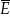0,1,E2). For the 74LS138 to “decode,” you must make the active-low inputs 0 and 1 low, while making the active-high input E2 high. If any other set of enable inputs is applied, the decoder is disabled, making all active-low outputs high regardless of the selected inputs.
Other common decoders include the 7442 BCD-to-DEC (decimal) decoder, the 74154 1-of-16 (hex) decoder, and the 7447 BCD-to-seven-segment decoder shown in Figure 12.37. Like the preceding decoder, these devices also have active-low outputs. The 7442 uses a binary-coded decimal input to select 1 of 10 (0 through 9) possible outputs. The 74154 uses a 4-bit binary input to address 1 of 16 (or 0 of 15) outputs, making that output low (all others high), provided the enables are both set low.
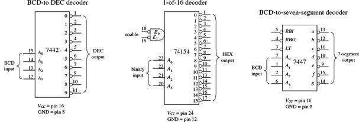
FIGURE 12.37
Now the 7447 is a bit different from the other decoders. With this device, more than one output can be driven low at a time. This is important because it allows the 7447 to drive a seven-segment LED display; to create different numbers requires driving more than one LED segment at a time. For example, in Fig. 12.38, when the BCD number for 5 (0101) is applied to the 7447’s inputs, all outputs except 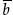and 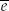 go low. This causes LED segments a, c, d, f, and g to light up—the 7447 sinks current through these LED segments, as indicated by the internal wiring of the display and the truth table.
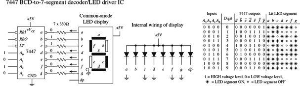
FIGURE 12.38
The 7447 also comes with a lamp test active-low input (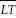) that can be used to drive all LED segments at once to see if any of the segments are faulty. The ripple blanking input (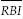) and ripple blanking output (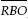) can be used in multistage display applications to suppress a leading-edge and/or trailing-edge zero in a multidigit decimal. For example, using the ripple blanking inputs and outputs, it is possible to take an eight-digit expression like 0056.020 and display 56.02, suppressing the two leading zeros and the one trailing zero. Leading-edge zero suppression is obtained by connecting the ripple blanking output of a decoder to the ripple blanking input of the next lower-stage device. The most significant decoder stage should have its ripple blanking input grounded. A similar procedure is used to provide automatic suppression of trailing zeros in the fractional part of the decimal.
12.3.3 Encoders and Code Converters
Encoders are the opposite of decoders. They are used to generate a coded output from a single active numeric input. To illustrate this in a simple manner, let’s take a look at the simple decimal-to-BCD encoder circuit shown in Fig. 12.39.
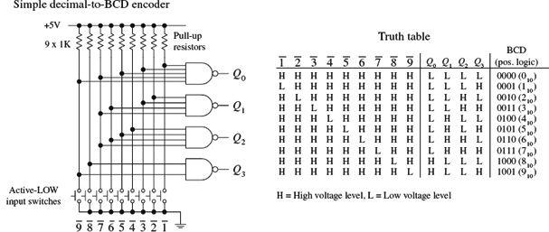
FIGURE 12.39
In this circuit, normally all lines are held high by the pullup resistors connected to +5 V. To generate a BCD output that is equivalent to a single selected decimal input, the switch corresponding to that decimal is closed. (The switch acts as an active-low input.) The truth table in Fig. 12.39 explains the rest.
Figure 12.40 shows a 74LS147 decimal-to-BCD (ten-line-to-four-line) priority encoder IC. The 74LS147 provides the same basic function as the circuit shown in Fig. 12.39, but it has active-low outputs. This means that instead of getting an LLHH output when 3 is selected, as in the previous encoder, you get HHLL. The two outputs represent the same thing (3); one is expressed in positive true logic, and the other (the 74LS147) is expressed in negative true logic. If you do not like negative true logic, you can slap inverters on the outputs of the 74LS147 to get positive true logic. The choice to use positive or negative true logic really depends on what you are planning to drive. For example, negative true logic is useful when the device that you wish to drive uses active-low inputs.
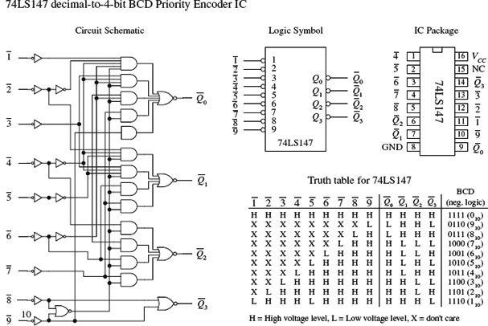
FIGURE 12.40
Another important difference between the two encoders is the priority that is used with the 74LS147 and not used with the encoder in Fig. 12.39. The term priority is applied to the 74LS147 because this encoder is designed so that if two or more inputs are selected at the same time, it will select only the larger-order digit. For example, if 3, 5, and 8 are selected at the same time, only the 8 (negative true BCD LHHH or 0111) will be output. The truth table in Fig. 12.40 demonstrates this; look at the “don’t care” or “X” entries. With the nonpriority encoder, if two or more inputs are applied at the same time, the output will be unpredictable.
The circuit shown in Fig. 12.41 provides a simple illustration of how an encoder and a decoder can be used together to drive an LED display via a 0 through 9 keypad. The 74LS147 encodes a keypad’s input into BCD (negative logic). A set of inverters then converts the negative true BCD into positive true BCD. The transformed BCD is then fed into a 7447 seven-segment LED display decoder/driver IC.
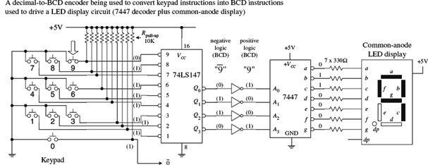
FIGURE 12.41
Figure 12.42 shows a 74148 octal-to-binary priory encoder IC. It is used to transform a specified single octal input into a binary 3-bit output code. As with the 74LS147, the 74148 comes with a priority feature, so if two or more inputs are selected at the same time, only the higher-order number is selected.
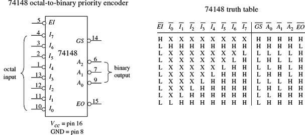
FIGURE 12.42
A high applied to the input enable (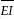) forces all outputs to their inactive (high) state and allows new data to settle without producing erroneous information at the outputs. A group signal output () and an enable output () are also provided to allow for system expansion. The output is active level low when any input is low (active). The output is low (active) when all inputs are high. Using the output enable along with the input enable allows priority coding of N input signals. Both and are active high when the input enable is high (device disabled).
Figure 12.43 shows a 74184 BCD-to-binary converter (encoder) IC. This device has eight active-high outputs (Y1 – Y8). Outputs Y1 to Y5 are outputs for regular BCD-to-binary conversion, while outputs Y6 to Y8 are used for a special BDC code called nine’s complement and ten’s complement. The active-high BCD code is applied to inputs A through E. The input is an active-low enable input.
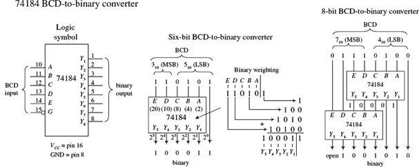
FIGURE 12.43
A sample 6-bit BCD-to-binary converter and a sample 8-bit BCD-to-binary converter that use the 74184 are shown to the right in Fig. 12.43. In the 6-bit circuit, since the LSB of the BCD input is always equal to the LSB of the binary output, the connection is made straight from input to output. The other BCD bits are applied directly to inputs A through E. The binary weighing factors for each input are A = 2, B = 4, C = 8, D = 10, and E = 20. Because only 2 bits are available for the MSD BCD input, the largest BCD digit in that position is 3 (binary 11). To get a complete 8-bit BCD converter, you connect two 74184s together, as shown to the far right in Fig. 12.43.
Figure 12.44 shows a 74185 binary-to-BCD converter (encoder). It is essentially the same as the 74184, but in reverse. The figure shows 6-bit and 8-bit binary-to-BCD converter arrangements.
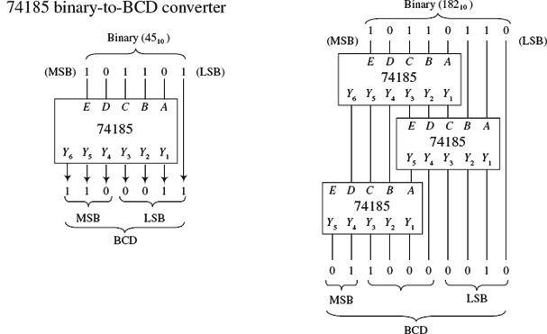
FIGURE 12.44
12.3.4 Binary Adders
If you find yourself needing to do arithmetic in logic, then that is a pretty sure sign that you need to use a microcontroller. However, that microcontroller will contain exactly the sort of logic that we describe here in its arithmetic logic unit (ALU), so it is instructive to see how it works under the hood.
With a few logic gates, you can create a circuit that adds binary numbers. The mechanics of adding binary numbers is basically the same as that of adding decimal numbers. When the first digit of a two-digit number is added, a 1 is carried and added to the next row whenever the count exceeds binary 2 (for example., 1 + 1 = 10, or = 0 carry a 1). For numbers with more digits, you have multiple carry bits.
To demonstrate how you can use logic gates to perform basic addition, start out by considering the half-adder circuits in Fig. 12.45. Both half-adders shown are equivalent; one simply uses XOR/AND logic, while the other uses NOR/AND logic. The half-adder adds two single-bit numbers A and B and produces a 2-bit number. The LSB is represented as Σ0, and the MSB, or carry bit, is represented as Cout.
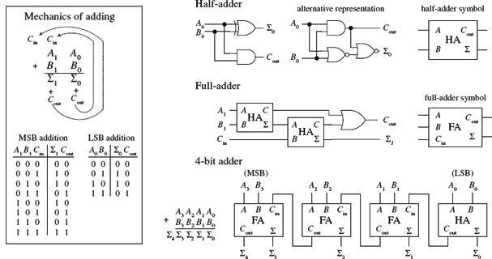
FIGURE 12.45
The most complicated operation the half-adder can do is 1 + 1. To perform addition on a two-digit number, you must attach a full-adder circuit (shown in Fig. 12.45) to the output of the half-adder. The full-adder has three inputs: two to input the second digits of the two binary numbers (A1, B1), and another that accepts the carry bit from the half-adder (the circuit that added the first digits, A0 and B0, of the two numbers). The two outputs of the full-adder will provide the 2d-place digit sum Σ1 and another carry bit that acts as the third-place digit of the final sum. Now, you can keep adding more full-adders to the half-adder/full-adder combination to add larger numbers, linking the carry bit output of the first full-adder to the next full-adder, and so forth. To illustrate this point, a 4-bit adder is shown in Fig. 12.45.
A number of 4-bit full-adder ICs are available, such as the 74LS283 and 4008. These devices will add two 4-bit binary numbers and provide an additional input carry bit, as well as an output carry bit, so you can stack them together to get adders that are 8-bit, 12-bit, 16-bit, and so on. For example, Fig. 12.46 shows an 8-bit adder made by cascading two 74LS283 4-bit adders.
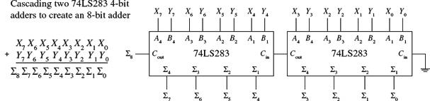
FIGURE 12.46
12.3.5 Binary Adder/Subtractor
Figure 12.47 shows how two 74LS283 4-bit adders can be combined with an XOR array to yield an 8-bit 2’s complement adder/subtractor. The first number X is applied to the X0 through X7 inputs, while the second number Y is applied to the Y0 through Y7 inputs.
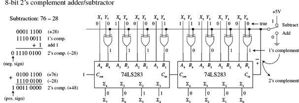
FIGURE 12.47
To add X and Y, the add/subtract switch is thrown to the add position, making one input of all XOR gates low. This has the effect of making the XOR gates appear transparent, allowing Y values to pass to the 74LS283s’ B inputs (X values are passed to the A inputs). The 8-bit adder then adds the numbers and presents the result to the Σ outputs.
To subtract Y from X, you must first convert Y into 1’s complement form; then you must add 1 to get Y into 2’s complement form. After that you simply add X to the 2’s complemented form of Y to get X−Y. When the add/subtract switch is thrown to the subtract position, one input to each XOR gate is set high. This causes the Y bits that are applied to the other XOR inputs to become inverted at the XOR outputs—you have just taken the 1’s complement of Y. The 1’s complement bits of Y are then presented to the inputs of the 8-bit adder. At the same time, Cin of the left 74LS283 is set high via the wire (see Fig. 12.47) so that a 1 is added to the 1’s complement number to yield a 2’s complement number. The 8-bit adder then adds X and the 2’s complement of Y together. The final result is presented at the Σ outputs. In the figure, 76 is subtracted from 28.
12.3.6 Arithmetic Logic Units
An ALU is a multipurpose integrated circuit capable of performing various arithmetic and logic operations. To choose a specific operation to be performed, a binary code is applied to the IC’s mode select inputs. The 74181, shown in Fig. 12.48, is a 4-bit ALU that provides 16 arithmetic and 16 logic operations.
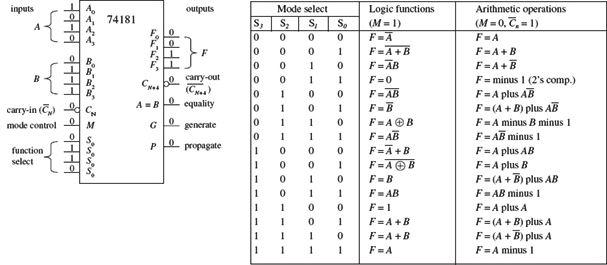
FIGURE 12.48
To select an arithmetic operation, the 74181’s mode control input (M) is set low. To select a logic operation, the mode control input is set high. Once you have decided whether you want to perform a logic or arithmetic operation, you apply a 4-bit code to the mode select inputs (S0, S1, S2, and S3) to specify which specific operation, as indicated within the truth table, is to be performed. For example, if you select S3 = 1, S2 = 1, S1 = 1, S0 = 0, while M = 1, then you get F0 = A0 + B0, F1 = A1 + B1, F2 = A2 + B2, F3 = A3 + B3. Note that the + shown in the truth table does not represent addition; it is used to represent the OR function. For addition, the tables use “plus.” Carry-in (N) and carry-out (CN + 4) leads are provided for use in arithmetic operations. All arithmetic results generated by this device are in 2’s complement notation.
12.3.7 Comparators and Magnitude Comparator ICs
A digital comparator is a circuit that accepts two binary numbers and determines whether the two numbers are equal. For example, Fig. 12.49 shows a 1-bit and a 4-bit comparator. The 1-bit comparator outputs a high (1) only when the two 1-bit numbers A and B are equal. If A is not equal to B, then the output goes low (0). The 4-bit is basically four 1-bit comparators in one. When all individual digits of each number are equal, all XOR gates output a high, which in turn enables the AND gate, making the output high. If any two corresponding digits of the two numbers are not equal, the output goes low.
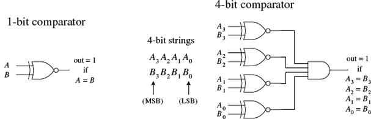
FIGURE 12.49
Now, say you want to know which number, A or B, is larger. The circuits in Fig. 12.49 will not do the trick. What you need instead is a magnitude comparator like the 74HC85 shown in Fig. 12.50. This device not only tells you if two numbers are equal, but also which number is larger. For example, if you apply a 1001 (910) to the A3A2A1A0 inputs and a second number 1100 (1210) to the B3B2B1B0 inputs, the A < B output will go high (the other two outputs, A > B and A = B, will remain low). If A and B were equal, the A = B output would have gone high, and so on. If you wanted to compare larger numbers—say, two 8-bit numbers—you simply cascade two 74HC85 comparators together, as shown on the right side of Fig. 12.50. The leftmost 74HC85 compares the lower-order bits, while the rightmost 74HC85 compares the higher-order bits. To link the two devices together, you connect the output of the lower-order device to the expansion inputs of the higher-order device, as shown. The lower-order device’s expansion inputs are always set low (IA < B), high (IA = B), and low (IA > B).
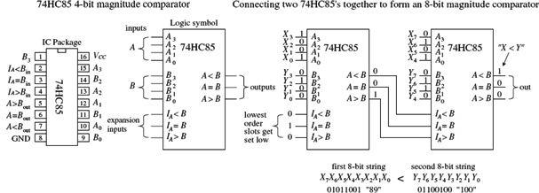
FIGURE 12.50
12.3.8 Parity Generator/Checker
Often, external noise can corrupt binary information (cause a bit to flip from one logic state to the other) as it travels along a conductor from one device to the next. For example, in the 4-bit system shown in Fig. 12.51, a BCD 4 (0100) picks up noise and becomes 0101 (or 5) before reaching its destination. Depending on the application, this type of error could lead to some serious problems.
FIGURE 12.51
To avoid problems caused by unwanted data corruption, a parity generator/checker system, like the one shown in Fig. 12.51, can be used. The basic idea is to add an extra bit, called a parity bit, to the digital information being transmitted. If the parity bit makes the sum of all transmitted bits (including the parity bit) odd, the transmitted information is of odd parity. If the parity bit makes the sum even, the transmitted information is of even parity. A parity generator circuit creates the parity bit, while the parity checker on the receiving end determines if the information sent is of the proper parity. The type of parity (odd or even) is agreed to beforehand, so the parity checker knows what to look for. The parity bit can be placed next to the MSB or the LSB, provided the device on the receiving end knows which bit is the parity bit and which bits are the data. The arrangement shown in Fig. 12.51 is designed with an even-parity error-detection system.
If you want to avoid building parity generators and checkers from scratch, use a parity generator/checker IC like the 74F280 9-bit odd-even parity generator/checker shown in Fig. 12.52. To make a complete error-detection system, two 74F280s are used: one acts as the parity generator, and the other acts as the parity checker. The generator’s inputs A through H are connected to the eight data lines of the transmitting portion of the circuit. The ninth input (I) is grounded when the device is used as a generator. If you want to create an odd-parity generator, you tap the Σodd output; for even parity, you tap Σeven. The 74F280 checker taps the main line at the receiving end and also accepts the parity bit line at input I. Figure 12.52 shows an odd-parity error-detection system used with an 8-bit system. If an error occurs, a high (1) is generated at the Σodd output.
FIGURE 12.52
12.3.9 A Note on Obsolescence and the Trend Toward Microcontroller Control
We have just covered most of the combinational devices you will find discussed in textbooks and listed within electronic catalogs. Many of these devices are still used. However, some devices, such as the binary adders and code converters, are obsolete.
Today, the trend is to use software-controlled devices such as microprocessors and microcontrollers to carry out arithmetic operations and code conversions. Before you attempt to design any logic circuit, I suggest jumping to Chapter 13, which covers microcontrollers.
Microcontrollers can be used to collect data, store data, and perform logical operations using the input data. They also can generate output signals that can be used to control displays, audio devices, stepper motors, servos, and so on. The specific functions a microcontroller is designed to perform depend on the program you store in its internal ROM-type memory.
Programming the microcontroller typically involves simply using a special programming unit provided by the manufacturer. The programming unit usually consists of a prototyping platform that is linked to a host computer (via a USB port) that is running a development environment. In the development environment, you typically write out a program in a high-level language such as C, or some other specialized language designed for a certain microcontroller, and then, with the press of a key, the program is converted into machine language (1s and 0s) and downloaded into the microcontroller’s memory.
In many applications, a single microcontroller can replace entire logic circuits composed of numerous discrete components. For this reason, it is tempting to skip the rest of this chapter and go directly to the chapter on microcontrollers. However, there are three basic problems with this approach:
• If you are a beginner, you will miss out on many important principles behind digital control that are most easily understood by learning how the discrete components work.
• Many digital circuits that you can build simply do not require the amount of sophistication a microcontroller provides.
• You may feel intimidated by the electronics catalogs that list every conceivable component available (even those that are obsolete). Knowing what’s out there and knowing what to avoid are also important parts of the learning process.
12.4 Logic Families
Before moving on to sequential logic, let’s touch on a few practical matters regarding the various logic families available and what kind of operating characteristics these families have. In this section, you will also encounter unique logic gates that have open-collector output stages and logic gates that have Schmitt-triggered inputs.
The key ingredient within any integrated logic device—a logic gate, a multiplexer, or a microprocessor—is the transistor. The kinds of transistors used within the IC, to a large extent, specify the type of logic family. The two most popular transistors used in ICs are bipolar and MOSFET transistors.
In general, ICs made from MOSFET transistors use less space due to their simpler construction, have very high noise immunity, and consume less power than equivalent bipolar transistor ICs. However, the high-input impedance and input capacitance of the MOSFET transistors (due to their insulated gate leads) result in longer time constants for transistor on/off switching speeds when compared with bipolar gates, and therefore typically result in a slower device. Over years of development, however, the performance gap between these two technologies has narrowed considerably.
Both the bipolar and MOSFET logic families can be divided into a number of subclasses. The major subclasses of the bipolar family include transistor-transistor logic (TTL), emitter-coupled logic (ECL), and integrated-injection logic (IIL or I2L). The major subclasses of the MOSFET logic include P-channel MOSFET (PMOS), N-channel MOSFET (NMOS), and complementary MOSFET (CMOS). CMOS uses both NMOS and PMOS technologies. The two most popular technologies are TTL and CMOS. The other technologies are typically used in large-scale integration devices, such as microprocessors and memories. There are new technologies popping up all the time, which yield faster, more energy-efficient devices. Some examples include BiCMOS, GaAS, SOS, and Josephson junction technologies.
FIGURE 12.53
As you have already learned, TTL and CMOS devices are grouped into functional categories that get placed into either the 7400 series (74F, 74LS, 74HC (CMOS), and so on) or 4000 CMOS series (or the improved 4000B series). Another series you will run into is the 5400 series. This series is essentially equivalent to the 7400 series (with the same pinouts and same basic logic function), but it is a more expensive chip because it is designed for military applications that require increased supply voltage tolerances and temperature tolerances. For example, a 7400 IC typically has a supply voltage range from 4.75 to 5.25 V with a temperature range from 0 to 70°C. A 5400 IC typically has a voltage range between 4.5 and 5.5 V and a temperature range from -55 to 125°C.
12.4.1 TTL Family of ICs
The original TTL series, referred to as the standard TTL series (74xx), was developed early in the 1960s. This series is still in use, even though its overall performance is inferior to the newer line of TTL devices, such as the 74LSxx, 74ALSxx, and 74Fxx. The internal circuitry of a standard TTL 7400 NAND gate, along with a description of how it works, is provided next.
The TTL NAND gate is divided into three basic sections: multi-emitter input, control section, and totem-pole output stage. In the multi-emitter input section, a multi-emitter bipolar transistor Q1 acts like a two-input AND gate, while diodes D1 and D2 act as negative clamping diodes used to protect the inputs from any short-term negative input voltages that could damage the transistor. Q2 provides control and current boosting to the totem-pole output stage; when the output is high (1), Q4 is off (open) and Q3 is on (short). When the output is low (0), Q4 is on and Q3 is off. Because one or the other transistor is always off, the current flow from VCC to ground in that section of the circuit is minimized. The lower figures show both a high and low output state, along with the approximate voltages present at various locations. Notice that the actual output voltages are not exactly 0 or +5 V—a result of internal voltage drops across resistor, transistor, and diode. Instead, the outputs are around 3.4 V for high and 0.3 V for low. Note that to create, say, an eight-input NAND gate, the multi-emitter input transistor would have eight emitters instead of just two as shown.
FIGURE 12.54
A simple modification to the standard TTL series was made early on by reducing all the internal resistor values in order to reduce the RC time constants and thus increase the speed (reduce propagation delays). This improvement to the original TTL series marked the 74H series. Although the 74H series offered improved speed (about twice as fast) over the 74 series, it had more than double the power consumption. Later, the 74L series emerged. Unlike the 74H, the 74L took the 74 and increased all internal resistances. The net effect led to a reduction in power but increased propagation delay.
A significant improvement in speed within the TTL line emerged with the development of the 74Sxx series (Schottky TTL series). The key modifications involved placing Schottky diodes across the base-to-collector junctions of the transistors. These Schottky diodes eliminated capacitive effects caused by charge buildup in the transistor’s base region by passing the charge to the collector region. Schottky diodes were the best choice because of their inherent low charge buildup characteristics. The overall effect was an increase in speed by a factor of 5 and only a doubling in power.
Continually over time, by using different integration techniques and increasing the values of the internal resistors, more power-efficient series emerged, like the low-power Schottky 74LS series, with about one-third the power dissipation of the 74S. After the 74LS, the advanced-low-power Schottky 74ALS series emerged, which had even better performance. Another series developed around this time was the 74F series, or FAST logic, which used a new process of integration called oxide isolation (also used in the ALS series) that led to reduced propagation delays and decreased the overall size.
Today you will find many of the older series listed in electronics catalogs. Which series you choose ultimately depends on availability, cost, and what kind of performance you are seeking.
12.4.2 CMOS Family of ICs
While the TTL series was going through its various transformations, the CMOS series entered the picture. The original CMOS 4000 series (or the improved 4000B series) was developed to offer lower power consumption than the TTL series of devices—a feature made possible by the high input impedance characteristics of its MOSFET transistors. The 4000B series also offered a larger supply voltage range (3 to 18 V), with minimum logic high =  VDD and maximum logic low =
VDD and maximum logic low =  VDD. The 4000B series, though more energy efficient than the TTL series, was significantly slower and more susceptible to damage due to electrostatic discharge. Figure 12.55 shows the internal circuitry of CMOS NAND, AND, and NOR gates. To figure out how the gates work, apply high (logic 1) or low (logic 0) levels to the inputs and see which transistor gates turn on and which transistor gates turn off.
VDD. The 4000B series, though more energy efficient than the TTL series, was significantly slower and more susceptible to damage due to electrostatic discharge. Figure 12.55 shows the internal circuitry of CMOS NAND, AND, and NOR gates. To figure out how the gates work, apply high (logic 1) or low (logic 0) levels to the inputs and see which transistor gates turn on and which transistor gates turn off.
FIGURE 12.55
A further improvement in speed over the original 4000B series came with the introduction of the 40H00 series. Although this series was faster than the 4000B series, it was not quite as fast as the 74LS TTL series. The 74C CMOS series also emerged on the scene, which was designed specifically to be pin-compatible with the TTL line.
Another significant improvement in the CMOS family came with the development of the 74HC and the 74HCT series. Both these series, like the 74C series, were pin-compatible with the TTL 74 series. The 74HC (high-speed CMOS) series had the same speed as the 74LS, as well as the traditional CMOS low-power consumption. The 74HCT (high-speed CMOS TTL compatible) series was developed to be interchangeable with TTL devices (same I/O voltage level characteristics). The 74HC series is very popular today.
Still further improvements in 74HC/74HCT series led to the advanced CMOS logic (74AC/74ACT) series. The 74AC (advanced CMOS) series approached speeds comparable with the 74F TTL series, while the 74ACT (advanced CMOS TTL compatible) series was designed to be TTL compatible.
12.4.3 I/O Voltages and Noise Margins
The exact input voltage levels required for a logic IC to perceive a high (logic 1) or low (logic 0) input level differ between the various logic families. At the same time, the high and low output levels provided by a logic IC vary among the logic families. For example, Fig. 12.56 shows valid input and output voltage levels for both the 74LS (TTL) and 74HC (CMOS) families.
FIGURE 12.56
In Fig. 12.56, the voltage ranges are represented as follows:
• VIH represents the valid voltage range that will be interpreted as a high logic input level.
• VIL represents the valid voltage range that will be interpreted as a low logic input level.
• VOL represents the valid voltage range that will be guaranteed as a low logic output level.
• VOH represents the valid voltage range that will be guaranteed as a high logic output level.
As you can see from Fig. 12.56, if you connect the output of a 74HC device to the input of a 74LS device, there is no problem—the output logic levels of the 74HC are within the valid input range of the 74LS. However, if you turn things around, driving a 74HC device’s inputs from a 74LS’s output, you have problems—a high output level from the 74LS is too small to be interpreted as a high input level for the 74HC. Section 12.4.9 shows some tricks used to interface the various logic families together.
12.4.4 Current Ratings, Fanout, and Propagation Delays
Logic IC inputs and outputs can sink or source only a given amount of current. IIL is defined as the maximum low-level input current, IIH as the maximum high-level input current, IOH as the maximum high-level output current, and IOL as the maximum low-level output current. As an example, a standard 74xx TTL gate may have an IL = −1.6 mA and IIH = 40 μA while having an IOL = 16 mA and IOH = −400 μA. The negative sign means that current is leaving the gate (the gate is acting as a source). A positive sign means that current is entering the gate (the gate is acting as sink).
The limit to how much current a device can sink or source determines the size of loads that can be attached. The term fanout is used to specify the total number of gates that can be driven by a single gate of the same family without exceeding the current rating of the gate. The fanout is determined by taking the smaller result of IOL/IIL or IOH/IIH. For the standard 74 series, the fanout is 10 (16 mA/1.6 mA). For the 74LS series, the fanout is around 20; for the 74F, it is around 33; and for the 7HC, it is around 50.
If you apply a square pulse to the input of a logic gate, the output signal will experience a sloping rise time and fall time, as shown in the graph in Fig. 12.57. The rise time (tr) is the length of time it takes for a pulse to rise from 10 to 90 percent of its high level (e.g., 5 V = high: 0.5 V = 10%, 4.5 V = 90%). The fall time (tf) is the length of time it takes for a high level to fall from the 90 to 10 percent.
FIGURE 12.57
The rise and fall times, however, are not as significant when compared with propagation delays between input transition and output response. Propagation delay results from the limited switching speeds of the internal transistors within the logic device. The low-to-high propagation delay TPHL is the time it takes for the output of a device to switch from low to high after the input transition. The high-to-low propagation delay TPLH is the time it takes for the output to switch from high to low after the input transition. When designing circuits, it is important to take into account these delays, especially when you start dealing with sequential logic, where timing is everything. Figs. 12.58 and 12.59 provide typical propagation delays for various TTL and CMOS devices. Manufacturers will provide more accurate propagation information in their data sheets.
FIGURE 12.58
12.4.5 A Detailed Look at the TTL and CMOS Subfamilies
The information shown in Figs. 12.58 and 12.59, especially the data pertaining to propagation delays and current ratings, represents typical values for a given logic series. For more accurate data about a specific device, you must consult the manufacturer’s literature. In other words, use the provided information only as a rough guide to get a feeling for the overall performance of a given logic series.
12.4.6 A Look at a Few Other Logic Series
The 74-BiCMOS Series
The 74-BiCMOS series of devices incorporates the best features of bipolar and CMOS technology together in one package. The overall effect is an extremely high-speed, low-power digital logic family. This product line is especially well suited for, and mostly limited to, microprocessor bus interface logic. Each manufacturer uses a different suffix to identify its BiCMOS line. For example, Texas Instruments uses 74BCTxx, while Signetics (Phillips) uses 74ABTxx.
The 74-Low-Voltage Series
The 74-low-voltage series is a relatively new series that uses a nominal supply voltage of 3.3 V. Members of this series include the 74LV (low-voltage HCMOS), 74LVC (low-voltage CMOS), 74LVT (low-voltage technology), and 74ALVC (advanced low-voltage CMOS). See Fig. 12.60.
A relatively new series of logic uses a nominal supply voltage of 3.3 V and is designed for extremely low-power and low-voltage applications (such as battery-powered devices). The switching speed of LV logic is extremely fast, ranging from about 9 ns for the LB series down to 2.1 ns for the ALVC. Another nice feature of LV logic is high output drive capability. The LVT, for example, can sink up to 64 mA and source up to 32 mA.
FIGURE 12.60
Emitter-Coupled Logic
Emitter-coupled logic (ECL), a member of the bipolar family, was used for extremely high-speed applications, reaching speeds up to 500 MHz with propagation delays as low as 0.8 ns. There is one problem with ECL: it consumes a considerable amount of power when compared with the TTL and CMOS series.
ECL is obsolete now, but was used in computer systems, where power consumption is not as big an issue as speed. The trick to getting the bipolar transistors in an ECL device to respond so quickly is to never let the transistors saturate. Instead, high and low levels are determined by which transistor in a differential amplifier is conducting more. Figure 12.61 shows the internal circuitry of an OR/NOR ECL gate. The high and low logic-level voltages (−0.8 and −17 V, respectively) and the supply voltage (−5.2 V/0 V) are somewhat unusual and cause problems when interfacing with TTL and CMOS.
The OR/NOR gate shown here is composed of a differential amplifier input stage and an output stage. In the differential amplifier stage, a reference voltage is set up at Q3’s base via the voltage divider network (diodes/resistors). This reference voltage determines the threshold between high and low logic levels. When the base of Q3 is at a more positive potential with respect to the emitter of Q1 and Q2, Q3 conducts. When Q5 conducts, the OR output goes low. If either input A or B is raised to −0.8 V (high), the base of Q1 or Q2 will be at a higher potential than the base of Q3, and Q3 will cease conducting, forcing the OR output high. The overall effect of the ECL design prevents transistors from saturating, thereby eliminating charge buildup on the base of the transistors that limits switching speeds.
FIGURE 12.61
12.4.7 Logic Gates with Open-Collector Outputs
Among the members of the TTL series is a special class of logic gates that have open-collector output stages instead of the traditional totem-pole configuration you saw earlier. (Within the CMOS family, there are similar devices that are said to have open-drain output stages). These devices are not to be confused with the typical logic gates you have seen so far. Logic gates with open-collector outputs have entirely different output characteristics.
Figure 12.62 shows a NAND gate with open-collector (OC) output. Notice that the Q3 transistor is missing in the OC NAND gate. By removing Q3, the output no longer goes high when A and B logic levels are set to 00, 01, or 10. Instead, the output floats. When A and B logic levels are both high (1), the output is grounded. This means that the OC gate can only sink current; it cannot source current! So how do you get a high output level?
FIGURE 12.62
You use an external voltage source and a pullup resistor, as shown in the center of Fig. 12.62. Now, when the output floats, the pullup resistor connected to the external voltage source will “pull” the output to the same level as the external voltage source, which in this case is at +15 V. That’s right—you don’t need to use +5 V. That is one of the primary benefits of using OC gates: you can drive load-requiring voltage levels different from those of the logic circuitry.
Another important feature of OC gates is their ability to sink large amounts of currents. For example, the 7406 OC inverter buffer/driver IC is capable of sinking 40 mA, which is 2.5 times the amount of current a standard 7404 inverter can sink. (The 7404 OC buffer/driver has the same sinking ability as the 7406 OC, but does not provide any logic function; it simply acts as a buffer stage.) The ability for an OC gate to sink a reasonably large current makes it useful for driving LED displays and other higher-current loads. Figure 12.63 shows a number of OC logic gate ICs.
FIGURE 12.63
OC gates are also useful in instances where the output from two or more gates or other devices must be tied together. When you use standard gates with totem-pole output stages, if one gate outputs a high (+5 V) while another gate outputs a low (0 V), a direct short circuit is also created, which can cause either or both gates to burn out. By using OC gates, this problem can be avoided.
When working with OC gates, you cannot apply the same Boolean rules you used earlier with the standard gates. Instead, you must use what is called wired-AND logic, which amounts to simply ANDing all gates together, as shown in Fig. 12.62. In other words, the outputs of all the gates must float in order to get a high output level.
12.4.8 Schmitt-Triggered Gates
Schmitt-triggered gates are special-purpose logic gates that come with Schmitt-triggered inputs. Unlike the conventional logic gates, Schmitt-triggered gates have two input threshold voltages: the positive threshold voltage () and the negative threshold voltage (). Example Schmitt-triggered ICs include the quad 7414 inverter, the quad 2-input NAND gate, and the dual 4-input NAND gate shown in Fig. 12.64.
FIGURE 12.64
To get a sense of how these devices work, let’s compare the Schmitt-triggered 7414 inverter gate with a conventional inverter gate, the 7404. With the 7404, to make the output go from high to low or from low to high, the input voltage must fall above or below the single 2.0-V threshold voltage. However, with the 7414, to make the output go from low to high, the input voltage must dip below (which is +0.9 V for this particular IC). To make the output go from high to low, the input voltage must pop above (which is +1.7 V for this particular IC). The difference in voltage between and is called the hysteresis voltage (see Chapter 8 for details). The symbol used to designate a Schmitt trigger is based on the appearance of its transfer function, as shown in Fig. 12.65.
FIGURE 12.65
In terms of applications, Schmitt-triggered devices are quite handy for transforming noisy signals or signals that waver around critical threshold levels into sharply defined, jitter-free output signals. This is illustrated in the lower graphs shown in Fig. 12.65. The conventional 7404 experiences an unwanted output spike resulting from a short-term spike present during low-to-high and high-to-low input voltage transitions. The Schmitt-triggered inverter ignores these spikes because it incorporates hysteresis.
12.4.9 Interfacing Logic Families
Mixing of logic families, in general, should be avoided. Obvious reasons for not mixing include differences in I/O logic levels, supply voltages, and output drive capability that exist among the various families. Another important reason involves differences in speed between the various families; if you mix slow-logic ICs with faster-logic ICs, you can run into timing problems.
There are times, however, when mixing is unavoidable or even desirable. For example, perhaps a desired special-purpose device (such as memory or a counter) exists only in CMOS, but the rest of your system consists of TTL. Mixing of families is also common when driving loads. For example, a TTL gate (often with an open-collector output) is frequently used as an interface between a CMOS circuit and an external load, such as LED indicator lights. A CMOS output, by itself, usually does not provide sufficient drive current to power such loads. I will discuss driving loads in Section 12.10.
Figure 12.66 shows tricks for interfacing various logic families. These tricks take care of I/O incompatibility problems as well as supply voltage incompatibility problems. The tricks, however, do not take care of any timing incompatibility problems that may arise.
Figure a. TTL can be directly interfaced with itself or with HCT or ACT.
Figure b. CMOS 74C/4000(B) with VDD = +5 V can drive TTL, HC, HCT, AC, or ACT.
Figure c. HC, HCT, AC, and ACT can directly drive TTL, HC, HCT, AC, ACT, and 74C/4000B (5 V).
Figure d. When 74C/4000(B) uses a supply voltage that is higher than +5 V, a level-shifting buffer IC, like the 4050B, can be used. The 4050B is powered by a 5-V supply and can accept 0-V/15-V logic levels at its inputs, while providing corresponding 0V/5V logic level outputs. The buffer also provides increased output drive current (4000B has a weak output drive capability when compared to TTL).
Figure e. Recall that the actual high output of a TTL gate is around 3.4 V instead of 5 V. But CMOS (VDD = 5 V) inputs may require from 4.4 (HC) to 4.9 V (4000B) for high input levels. If the CMOS device is of the 74C/4000B series, the actual required high input voltage depends on the supply voltage and is equal to 2/3VDD. To provide enough voltage to match voltage levels, a pullup resistor is used. The pullup resistor pulls the input to the CMOS gate up to the supply voltage to which the pullup resistor is connected.
Figure f. Another trick for interfacing TTL with CMOS is to simply use a CMOS TTL-compatible gate, like the 74HCT or 74ACT.
Figures g and h. These two figures show different methods for interfacing a TTL gate with a CMOS gate set to a higher supply voltage. In Figure g, a 4504B level-shifting buffer is used. The 4504B requires two supply voltages: a TTL supply (for 0/5 V levels) and a CMOS supply (for 0 to 15 V levels). In Figure h, an open-collector buffer and 10-k pullup resistor are used to convert the lower-level TTL output voltages into higher-level CMOS input voltages.
FIGURE 12.66
12.5 Powering and Testing Logic ICs
Most TTL and CMOS logic devices will work with 5 V ± 0.25 V (5 percent) supplies like the ones shown in Fig. 12.67. The battery supplies should be avoided when using certain TTL families like the 74xx, 74S, 74AS, and 74F, which dissipate considerably more current than, say, the CMOS 74HC series. Of course, the low-power, low-voltage 74LV, 74LVC, 74LVT, 74ALVC, and 74BCT series, which require from 1.2 to 3.6 V with as low as 2.5 μW/gate power dissipation (for 74BCT), are ideal for small battery-powered applications.
FIGURE 12.67
12.5.1 Power Supply Decoupling
When a TTL device makes a low-to-high or a high-to-low level transition, there is an interval during which the conduction times in the upper and lower totem-pole output transistors overlap. During this interval, a drastic change in power supply current occurs, which results in a sharp, high-frequency current spike within the supply line. If a number of other devices are linked to the same supply, the unwanted spike can cause false triggering of these devices. The spike also can generate unwanted electromagnetic radiation.
To avoid unwanted spikes within TTL systems, decoupling capacitors can be used. A decoupling capacitor, typically multilayer ceramic, from 0.01 to 0.1 μF (>5 V), is placed directly across the VCC-to-ground pins of each IC in the system. The capacitors absorb the spikes and keep the VCC level at each IC constant, thus reducing the likelihood of false triggering and generally electromagnetic radiation. Decoupling capacitors should be placed as close to the ICs as possible to keep current spikes local, instead of allowing them to propagate back toward the power supply. You can usually get by with using one decoupling capacitor for every five to ten gates or one for every five counter or register ICs.
12.5.2 Unused Inputs
Unused inputs that affect the logical state of a chip should not be allowed to float. Instead, they should be tied high or low, as necessary (floating inputs are liable to pick up external electrical noise, which leads to erratic output behavior). For example, a four-input NAND TTL gate that uses only two inputs should have its two unused inputs held high to maintain proper logic operation. A three-input NOR gate that uses only two inputs should have its unused input held low to maintain proper logic operation. Likewise, the CLEAR and PRESET inputs of a flip-flop should be grounded or tied high, as appropriate.
If there are unused sections within an IC (for example, unused logic gates within a multigate package), the inputs that link to these sections can be left unconnected for TTL but not for CMOS. When unused inputs are left unconnected in CMOS devices, the inputs may pick up unwanted charge and may reach a voltage level that causes output MOS transistors to conduct simultaneously, resulting in a large internal current spike from the supply (VDD) to ground. The result can lead to excessive supply current drain and IC damage. To avoid this fate, inputs of unused sections of a CMOS IC should be grounded. Figure 12.68 illustrates what to do with unused inputs for TTL and CMOS NAND and NOR ICs.
FIGURE 12.68
As a last note of caution, never drive CMOS inputs when the IC’s supply voltage is removed. Doing so can damage the IC’s input protection diodes.
12.5.3 Logic Probes and Logic Pulsers
Two simple tools used to test logic ICs and circuits include the test probe and logic pulser, as shown in Fig. 12.69.
FIGURE 12.69
A typical logic probe comes in a pen-like package, with metal probe tip and power supply wires: one red and one black. Red is connected to the positive supply voltage of the digital circuit (VCC), and black is connected to the ground (VSS) of the circuit. To test a logic state within a circuit, the metal tip of the probe is applied. If a high voltage is detected, the probe’s high LED lights up; if a low voltage is detected, the probe’s low LED turns off.
Along with performing simple static tests, logic probes can perform a few simple dynamic tests, such as detecting a single momentary pulse that is too fast for the human eye to detect or detecting a pulse train, such as a clock signal. To detect a single pulse, the probe’s PULSE/MEMORY switch is thrown to the MEMORY position. When a single pulse is detected, the internal memory circuit remembers the single pulse and lights up both the HI LED and PULSE LED at the same time. To clear the memory to detect a new single pulse, the PULSE/MEMORY switch is toggled. To detect a pulse train, the PULSE/MEMORY switch is thrown to the PULSE position. When a pulse train is detected, the PULSE LED flashes on and off.
Logic probes usually will detect single pulses with widths as narrow as 10 ns and will detect pulse trains with frequencies around 100 MHz. Check the specifications that come with your probe to determine these minimum and maximum limits.
A logic pulser allows you to send a single logic pulse or a pulse train through an IC and circuits, where the results of the applied pulses can be monitored by a logic probe. Like a logic probe, the pulser comes with similar supply leads. To send a single pulse, the SINGLE-PULSE/PULSE-TRAIN switch is set to SINGLE-PULSE, and then the SINGLE-PULSE button is pressed. To send a pulse train, switch to PULSE-TRAIN mode. With the pulser model shown in Fig. 12.69, you get to select either 1 pulse per second (pps) or 500 pps.
12.6 Sequential Logic
The combinational circuits covered previously (encoders, decoders, multiplexers, parity generators/checkers, and so on) have the property of input-to-output immediacy. This means that when input data is applied to a combinational circuit, the output responds almost immediately. Now, combinational circuits lack a very important characteristic: they cannot store information. A digital device that cannot store information is not very interesting, practically speaking.
To provide “memory” to circuits, you must create devices that can latch onto data at a desired moment in time. The realm of digital electronics devoted to this subject is referred to as sequential logic. This branch of electronics is referred to as sequential because for data bits to be stored and retrieved, a series of steps must occur in a particular order. For example, a typical set of steps might involve first sending an enable pulse to a storage device, and then loading a group of data bits all at once (parallel load), or perhaps loading a group of data bits in a serial manner, which takes a number of individual steps. At a later time, the data bits may need to be retrieved by first applying a control pulse to the storage device. A series of other pulses might be required to force the bits out of the storage device.
To push bits through sequential circuits usually requires a clock generator. The clock generator is similar to the human heart. It generates a series of high and low voltages (analogous to a series of high and low pressures as the heart pumps blood) that can set bits into action. The clock also acts as a time base on which all sequential actions can be referenced. Clock generators will be discussed in detail in Section 12.6.7. Now, let’s take a look at the most elementary of sequential devices: the SR flip-flop.
12.6.1 SR Flip-Flops
The most elementary data-storage circuit is the set-reset (SR) flip-flop, also referred to as a transparent latch. There are two basic kinds of SR flip-flops: the cross-NOR SR flip-flop and the cross-NAND SR flip-flop.
Consider the cross-NOR SR flip-flop shown in Fig. 12.70. At first, it appears that figuring out what the cross-NOR SR flip-flop does given only two input voltages is impossible, since the NOR gates’ inputs depend on the outputs, and what are the outputs anyway? (For now, pretend that Q and are not complements but separate variables; you could call them X and Y if you like.) Well, first of all, you know that a NOR gate will output a high (logic 1) only if both inputs are low (logic 0). From this, you can deduce that if S = 1 and R = 0, Q must be 1 and must be 0, regardless of the outputs. This is called the set condition. Likewise, by similar argument, we can deduce that if S = 0 and R = 1, Q must be 0 and must be 1. This is called the reset condition.
FIGURE 12.70
But now, what about R = 0 and S = 0? Can you predict the outputs given only input levels? No! It is impossible to predict the outputs because the outputs are essential for predicting the outputs—it is a “catch-22.” However, if you know the states of the outputs beforehand, you can figure things out. For example, if you first set the flip-flop (S = 1, R = 0, Q = 1, = 0), and then apply S = 0, R = 0, the flip-flop would remain set (upper gate: S = 0, Q = 1 → =0; lower gate: R = 0, = 0 → Q = 1). Likewise, if you start out in reset mode (S = 0, R = 1, Q = 0, Q =0), and then apply S = 0, R = 0, the flip-flop remains in reset mode (upper gate: S = 0, Q = 0 → = 1; lower gate: R = 0, =1 → Q = 0). In other words, the flip-flop remembers, or latches onto, the previous output state even when both inputs go low (0). This is referred to as the hold condition.
The last choice you have is S = 1, R = 1. Here, it is easy to predict what will happen because you know that as long as there is at least one high (1) applied to the input to the NOR gate, the output will always be 0. Therefore, Q = 0 and = 0. Now, there are two fundamental problems with the S = 1, R = 1 state. First, why would you want to set and reset at the same time? Second, when you return to the hold condition from S = 1, R = 1, you get an unpredictable result, unless you know which input returned low last. Why? When the inputs are brought back to the hold position (R = 0, S = 0, Q = 0, = 0), both NOR gates will want to be 1 (they want to be held). But let’s say one of the NOR gate’s outputs changes to 1 a fraction of a second before the other. In this case, the slower flip-flop will not output a 1 as planned, but will instead output 0. This is a classic example of a race condition, where the slower gate loses. But which flip-flop is the slower one? This unstable, unpredictable state cannot be avoided and is simply not used.
The cross-NAND SR flip-flop provides the same basic function as the NOR SR flip-flop, but there is a fundamental difference: its hold and indeterminate states are reversed. This occurs because, unlike the NOR gate, which outputs a low only when both its inputs are the same, the NAND gate outputs a high only when both its inputs are the same. This means that the hold condition for the cross-NAND SR flip-flop is S = 1, R = 1, while the indeterminate condition is S = 0, R = 0.
Now let’s look at two simple applications for SR flip-flops.
Switch Debouncer
Say you want to use the far-left switch/pullup resistor circuit (see Fig. 12.71) to drive an AND gate’s input high or low (the other input is fixed high). When the switch is open, the AND gate should receive a high. When the switch is closed, the gate should receive a low. That’s what should happen, but that’s not what actually happens. Why? Because of switch bounce.
FIGURE 12.71
When a switch is closed, the metal contacts bounce a number of times before coming to rest due to inherent springlike characteristics of the contacts. Though the bouncing typically lasts no more than 50 ms, the results can lead to unwanted false triggering, as shown in the far left circuit in Fig. 12.71.
A simple way to get rid of switch bounce is to use the switch debouncer circuit, shown at center of Fig. 12.71. This circuit uses an SR flip-flop to store the initial switch contact voltage while ignoring all trailing bounces. In this circuit, when the switch is thrown from the B to A position, the flip-flop is set. As the switch bounces alternately high and low, the Q output remains high, because when the switch contact bounces away from A, the S input receives a low (R is low, too), but that’s just a hold condition; the output stays the same. The same debouncing feature occurs when the switch is thrown from position A to B.
Latched Temperature or Light Alarm
The simple circuit in Fig. 12.71 uses an SR flip-flop to sound a buzzer alarm when the temperature (when using a thermistor) or the light intensity (when using a photoresistor) reaches a critical level. When the temperature or light increases, the resistance of the thermistor or photoresistor decreases, and the R input voltage goes down. When the R input voltage goes below the high threshold level of the NAND gate, the flip-flop is set, and the alarm is sounded. The alarm will continue to sound until the RESET switch is pressed and the temperature or light level has gone below the critical triggering level. The pot is used to adjust this level.
Level-Triggered SR Flip-Flop (the Beginning of Clocked Flip-Flops)
Now it would be nice to make an SR flip-flop synchronous; that is, make the S and R inputs either enabled or disabled by a control pulse, such as a clock. Only when the clock pulse arrives are the inputs sampled. Flip-flops that respond in this manner are referred to as synchronous or clocked flip-flops (as opposed to the preceding asynchronous flip-flops).
To make the preceding SR flip-flop into a synchronous or clocked device, simply attach enable gates to the inputs of the flip-flop, as shown in Fig. 12.72. The figure shows the cross-NAND arrangement, but a cross-NOR arrangement also can be used. In this setup, only when the clock is high are the S and R inputs enabled. When the clock is low, the inputs are disabled, and the flip-flop is placed in hold mode. The truth table and timing diagram in Fig. 12.72 help illustrate how this device works.
FIGURE 12.72
Edge-Triggered SR Flip-Flops
The level-triggered SR flip-flop has an annoying feature: its S and R inputs must be held at the desired input condition (set, reset, or no change) for the entire time that the clock signal is enabling the flip-flop. With a slight alteration, however, you can make the level-triggered flip-flop more flexible (in terms of timing control) by turning it into an edge-triggered flip-flop.
An edge-triggered flip-flop samples the inputs only during either a positive or negative clock edge (↑ = positive edge, ↓ = negative edge). Any changes that occur before or after the clock edge are ignored—the flip-flop will be placed in hold mode.
To make an edge-triggered flip-flop, introduce either a positive or a negative level-triggered clock pulse generator network into the previous level-triggered flip-flop, as shown in Fig. 12.73.
FIGURE 12.73
In a positive edge-triggered generator circuit, a NOT gate with a propagation delay is added. Since the clock signal is delayed through the inverter, the output of the AND gate will not provide a low (as would be the case without a propagation delay), but will provide a pulse that begins at the positive edge of the clock signal and lasts for a duration equal to the propagation delay of the NOT gate. It is this pulse that is used to clock the flip-flop.
Within the negative edge-triggered generator network, the clock signal is first inverted and then applied through the same NOT/AND network. The pulse begins at the negative edge of the clock and lasts for a duration equal to the propagation delay of the NOT gate. The propagation delay is typically so small (in nanoseconds) that the pulse is essentially an “edge.”
Pulse-Triggered SR Flip-Flops
A pulse-triggered SR flip-flop is a level-clocked flip-flop; however, for any change in output to occur, both the high and low levels of the clock must rise and fall. Pulse-triggered flip-flops are also called master-slave flip-flops; the master accepts the initial inputs and then “whips” the slave with its output when the negative clock edge arrives. Another analogy often used is to say that during the positive edge, the master gets cocked (like a gun), and during the negative clock edge, the slave gets triggered. Figure 12.74 shows a simplified pulse-triggered cross-NAND SR flip-flop.
FIGURE 12.74
The master is simply a clocked SR flip-flop that is enabled during the high clock pulse and outputs Y and (set, reset, or no change). The slave is similar to the master, but it is enabled only during the negative clock pulse (due to the inverter). The moment the slave is enabled, it uses the Y and outputs of the master as inputs, and then outputs the final result.
Notice the preset () and clear () inputs. These are called asynchronous inputs. Unlike the synchronous inputs, S and R, the asynchronous inputs disregard the clock and either clear (also called asynchronous reset) or preset (also called asynchronous set) the flip-flop. When - is high and is low, you get asynchronous reset, Q = 1, = 0, regardless of the CLK, S, and R inputs. These active-low inputs are therefore normally pulled high to make them inactive. The ability to apply asynchronous set and resets is often used to clear entire registers that consist of an array of flip-flops.
General Rules for Deciphering Flip-Flop Logic Symbols
Typically, you do not need to worry about constructing flip-flops from scratch. Instead, you buy flip-flop ICs, as discussed in the next section. Likewise, you do not need to worry about complex logic gate schematics. Instead, you use symbolic representations like the ones shown in Fig. 12.75. Although the symbols in the figure apply to SR flip-flops, the basic rules that are outlined can be applied to the D and JK flip-flops, which are discussed in the following sections.
FIGURE 12.75
12.6.2 SR Flip-Flop ICs
Figure 12.76 shows a few sample SR flip-flop (latch) ICs. The 74LS279A contains four independent SR latches (note that two of the latches have an EXTRA SET INPUT). This IC is commonly used in switch debouncers.
FIGURE 12.76
The 4043 contains four three-state cross-coupled NOR SR latches. Each latch has individual set and reset inputs, as well as separate Q outputs. The three-state feature is an extra bonus, which allows you to effectively disconnect all Q outputs, making it appear that the outputs are open circuits (high impedance, or high Z). This three-state feature is often used in applications where a number of devices must share a common data bus. When the output data from one latch is applied to the bus, the outputs of other latches (or other devices) are disconnected via the high-Z condition. The 4044 is similar to the 4043 but contains four three-state cross-coupled NAND RS latches.
12.6.3 D-Type Flip-Flops
A D-type flip-flop (data flip-flop) is a single input device. It is basically an SR flip-flop, where S is replaced with D and R is replaced with (inverted D). The inverted input is tapped from the D input through an inverter to the R input, as shown in Fig. 12.77. The inverter ensures that the indeterminate condition (race, or not used state, S = 1, R = 1) never occurs. At the same time, the inverter eliminates the hold condition so that you are left with only set (D = 1) and reset (D = 0) conditions. The circuit in Fig. 12.77 represents a level-triggered D-type flip-flop.
FIGURE 12.77
To create a clocked D-type level-triggered flip-flop, first start with the clocked level-triggered SR flip-flop and throw in the inverter, as shown in Fig. 12.78.
FIGURE 12.78